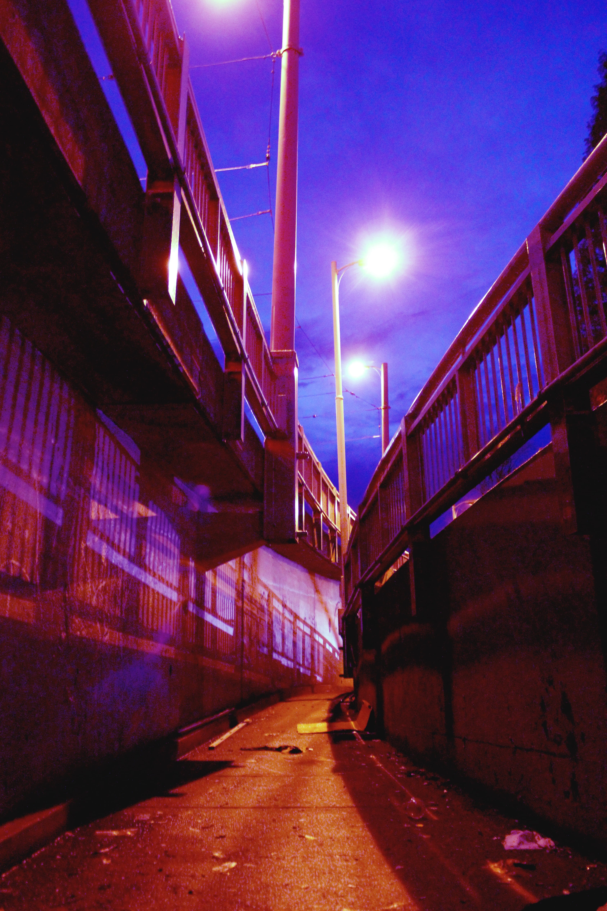

SIDE WORK
Welcome to my side exploration page, this gallery includes all my passions such as photography, digital arts, and films!
PHOTOGRAPHY
Here are some of the photographs that I took and edited in my daily life, I mostly take urban, nature, and portrait photos.



DIGITAL ARTS
Back in high school in Hong Kong, I occasionally created graphic works for different school clubs and events, here are some of them.


SHORT FILMS
Here are some short films that I directed, shot, and edited when I was in high school, they were for the annual interschool virtue film competition and graduation memorial. In the competition, the film was awarded the Best Editing and Story.